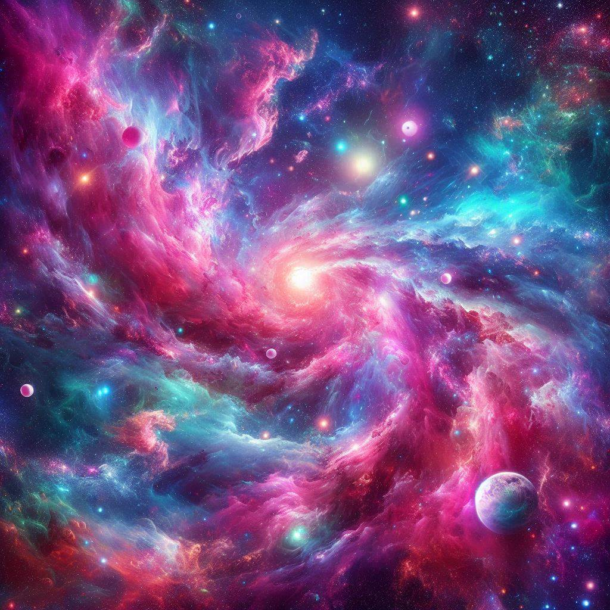

Descubrimiento 1
Las galaxias en espiral son las más comunes en el universo. Nuestra galaxia, la Vía Láctea, es una galaxia en espiral barrada.
Las galaxias en espiral son las más comunes en el universo. Nuestra galaxia, la Vía Láctea, es una galaxia en espiral barrada.
El Telescopio Espacial Hubble ha capturado algunas de las imágenes más detalladas del universo, permitiéndonos observar galaxias a miles de millones de años luz de distancia.
Los cúmulos de galaxias son las estructuras más grandes del universo, formadas por cientos o miles de galaxias unidas por la gravedad.
Las estrellas más grandes pueden tener un diámetro hasta 1000 veces mayor que el del Sol. La estrella más grande conocida es UY Scuti.
En el centro de nuestra galaxia hay un agujero negro supermasivo llamado Sagitario, con una masa de más de 4 millones de veces la del Sol.
Las galaxias pueden colisionar y fusionarse. Se cree que la Vía Láctea se fusionará con la galaxia de Andrómeda en unos 4 mil millones de años.
El universo observable tiene un diámetro de unos 93 mil millones de años luz. Sin embargo, el tamaño total del universo puede ser mucho mayor. Sin embargo, el tamaño total del universo puede ser mucho mayor y es posible que nunca lo conozcamos en su totalidad. Se cree que el universo se está expandiendo continuamente desde el Big Bang, que ocurrió hace aproximadamente 13.8 mil millones de años..
Las estrellas nacen en nubes de gas y polvo conocidas como nebulosas. Cuando una región de una nebulosa se colapsa bajo su propia gravedad, comienza a formar una estrella. Durante su vida, las estrellas pasan por varias etapas, incluyendo la secuencia principal, la gigante roja y la enana blanca.
Las estrellas se forman en regiones densas de gas interestelar, conocidas como nebulosas. Al colapsar estas regiones, el gas se calienta y eventualmente desencadena la fusión nuclear.Las galaxias se agrupan en cúmulos, los cuales son las estructuras más grandes en el universo.